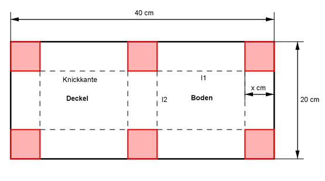

Aufgabe 130
Eine Bäckerei verpackt Kuchen in Schachteln aus
Karton. Die Schachteln stellt der Lieferant auf
Wunsch der Bäckerei wie dargestellt her. Wie lang
dürfen die ausgeschnittenen Quadrate sein, wenn
das Volumen der Schachtel möglichst groß sein
soll?

Volumen der Schachtel:
l1 = 20 - 2x
40 - 3x
l2 = --------- = 20 - 1,5x
2
V = l1 * l2 * x
V = (20 - 2x) * (20 - 1,5x) * x
V = (400 - 70x + 3x2)x
V = 400x - 70x2 + 3x2
V = 3x3 - 70x2 + 400x
Zur Bestimmung von Vmax:
V’(x) = 9x2 - 140x + 400 = 0
A, B, C - Formel:
A = 9, B = -140, C = 400
 140 ± √5200
x1,2 = ------------------
18
140 ± 72
x1,2 = -----------
18
212
x1 = ------ = 11,78
18
keine Lösung, denn 2 * 11,78 > 20
68
x2 = ------ = 3,77 cm
18
V’’(x) = 18x - 140
V’’(x) = 18 * 3,77 - 140 = 67,86 - 160 < 0
--> Maximum
140 ± √5200
x1,2 = ------------------
18
140 ± 72
x1,2 = -----------
18
212
x1 = ------ = 11,78
18
keine Lösung, denn 2 * 11,78 > 20
68
x2 = ------ = 3,77 cm
18
V’’(x) = 18x - 140
V’’(x) = 18 * 3,77 - 140 = 67,86 - 160 < 0
--> Maximum